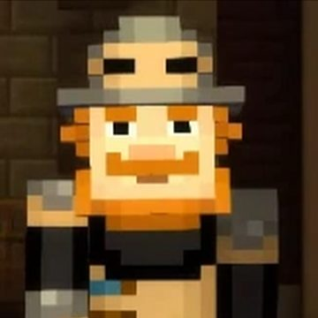
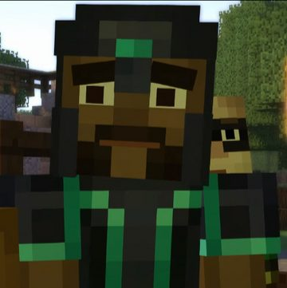
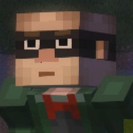
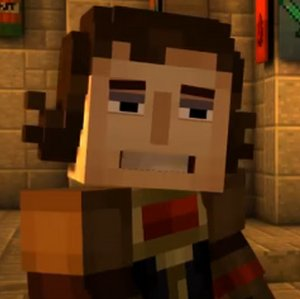
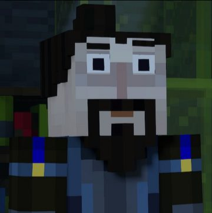

| Photo | Name | Description |
|  | Soren | Soren the Architect, or simply Soren, is the leader of the Old Order of the Stone and a key character in Minecraft: Story Mode. He is responsible for finding the Command Block and developing the Order's Amulet. Soren sought fame by lying about slaying the Ender Dragon and used amazing tactics. Soren initially appears in "The Order of the Stone" and "The Last Place You Look" before appearing in "A Block and a Hard Place". |
|  | Gabriel | Gabriel the Warrior, often known as Gabriel, is the protagonist in Minecraft: Story Mode. He was a former member of The Order of the Stone, a legendary order of heroes who falsified their legacy. Gabriel is widely regarded as the greatest warrior of all time. |
|  | Magnus | Magnus the Rogue, also known as Magnus, is a griefer and demolition specialist in Minecraft: Story Mode. He was a member of the Order of the Stone and the previous king of Boom Town. Magnus is noted for his stubbornness and egotism, and he has been dubbed the greatest griefer of all time. He is noted for his arrogance and boastfulness, and his actions may be attributed to his position in making things appear "legit." |
|  | Ellegard | Ellegaard the Redstone Engineer, also known as Ellie, is a Redstonist and a member of The Order of the Stone in Minecraft: Story Mode. Ellegaard's intellect and understanding of redstone mechanics make her a deadly opponent. Her conflict priorities fluctuate depending on the situation, underlining her unique characteristics. |
|  | Ivor | Ivor is a well-known character in Minecraft: Story Mode, appearing as an unhappy former member of The Order of the Stone who left due to their falsehoods. He created the Wither Storm to reveal their lies, but he subsequently redeems himself by assisting Jesse in defeating the Storm and warning of the Wither Storms that follow the Amulet. Despite his selfish nature, Ivor's acts do not bring true harm to anybody, since he proves that he is not a liar and has no purpose to hurt others. |
References:
Note: I put in different colors in each boxes so that the colors can resemble characters.